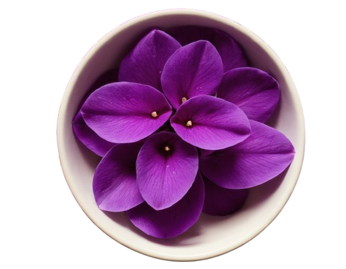

We are going to make our own indicator using coloured flower petals.

Select mortar-pestal
Now select flower-petals
Wait while the flower petals get ground into a paste in the mortar-pestle
Select distilled water and drop some water into the mortar-pestle
filter the mixture using a sieve to obtain a filtrate
Now select the sieve to filter the paste and get your indicator
Use the indicator to test with acid and alkali solutions
the light purple solution being added to an acid in a test tube the solution turning to red
show the light purple solution being added to an alkali in a test tube the solution turning to blue.
The pictures whose solutions or extracts will make the indicator prepared from the purple flowers change to blue and place them into the box provided.
Use the hand to pick and drop the correct items into the box below: